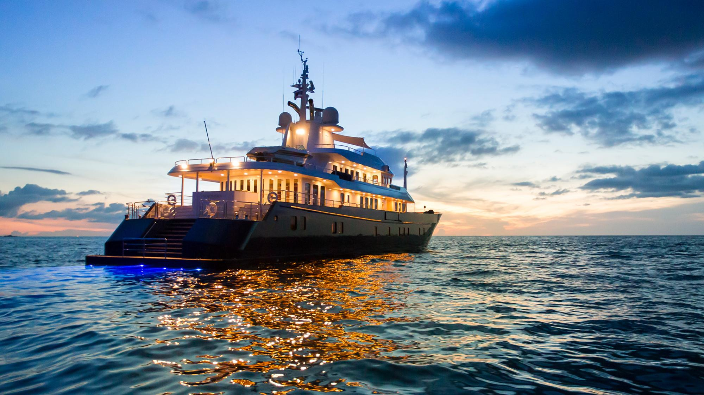

My name is Brandon Talbot and I am from North Scituate, RI. I commute to NEIT since the school is only 20 minutes away and the dorms are very expensive to live in. I am a very open minded person and will be up for just about anything. I don't feel like I nessasarily fit into a type of catagory like joks, nerds, weebs, ect, since I like all maner of things. I love to play sports and take competition very seriously (maybe a little to serious). I also like to play video game; I currently play on the Xbox Series X. I have found a new enjoyment in playing D&D farily recently. I was sceptical at first since I thought it was all about cos-playing (not a big fan) so I was turned off by it. However, I have come to relize that the game is a lot of fun to play and provides a sense of adventure that video games don't seem to portray. During the summer me and my dad are constantly fishing since it is one of our favorite things to do in the summer. It also provides a source of income for us since we sell the fish we catch. I am a pretty open person and always like meeting new people, however I can be pretty stubborn and lazy at times. If anyone cares about zobiac signs (I don't really get the big rave about them) I am a Taurus. I have travled to many places around the world, but my most exotic trip was when I went to Phuket, Thailand. This year I am turrning 21, and I am traviling to the island of St.Croix with my family and a couple of firends to celebrate.
